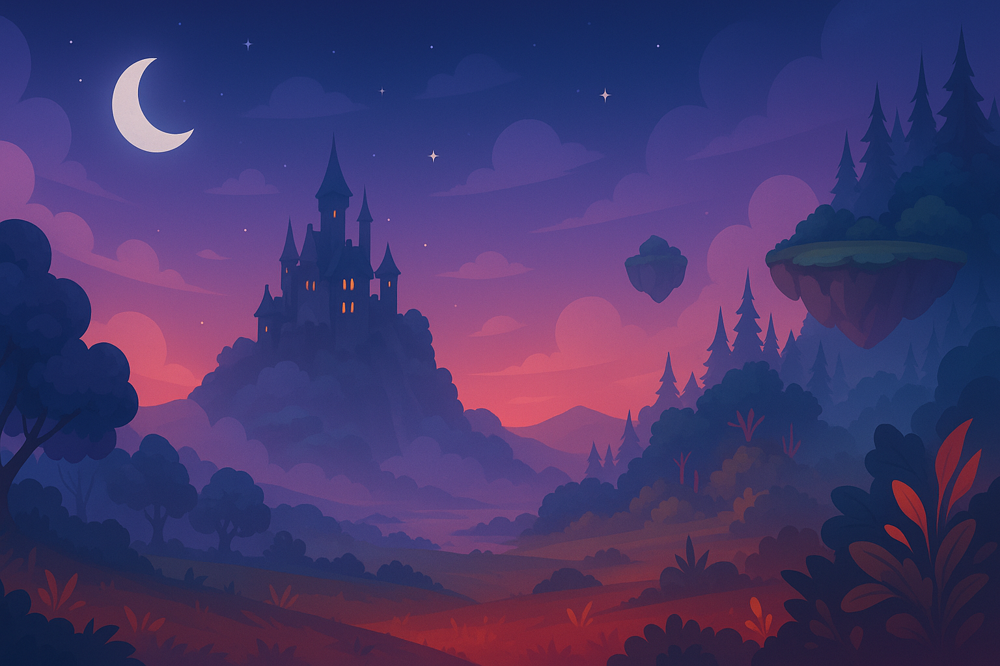
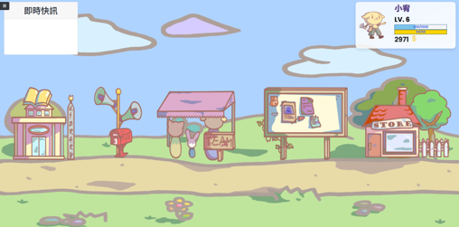
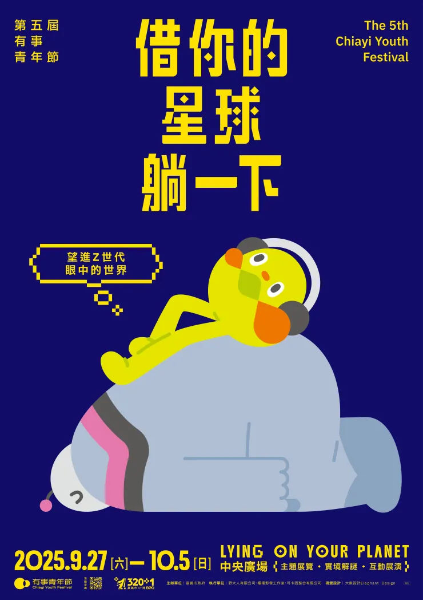
圖：嘉義市政府提供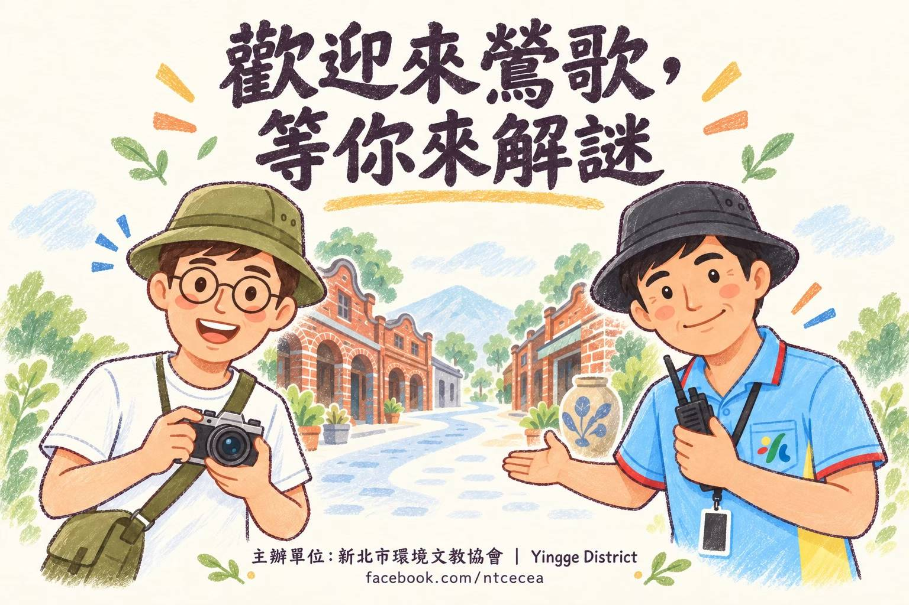
圖：新北市環境文教協會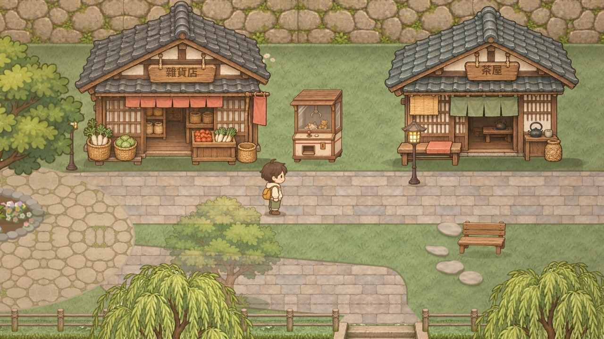
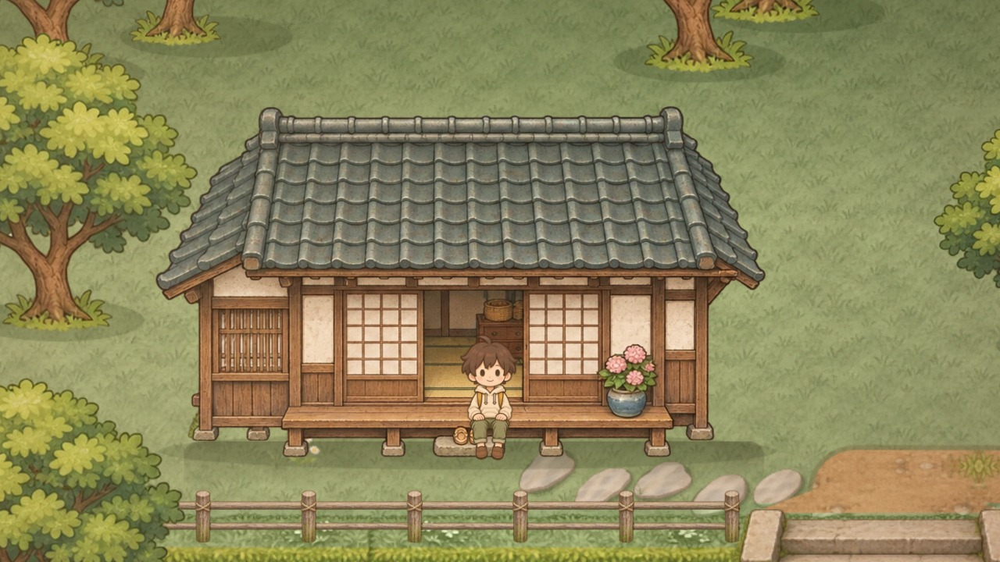
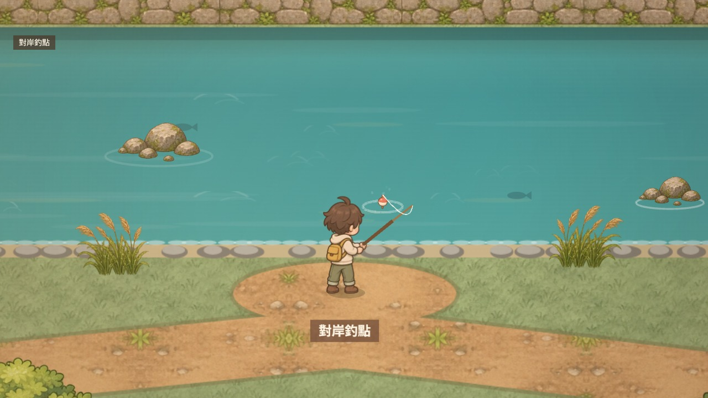
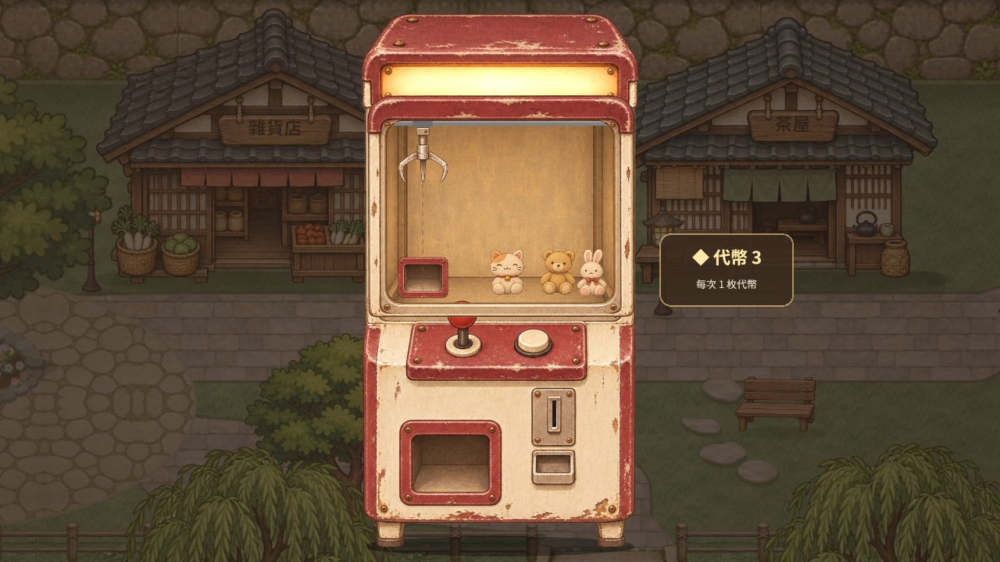
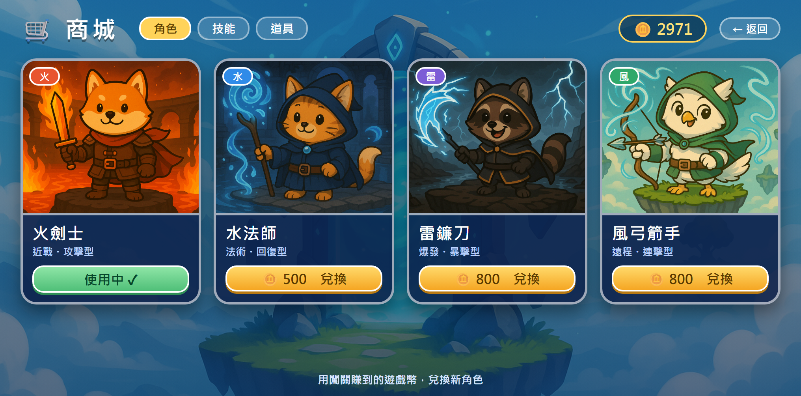
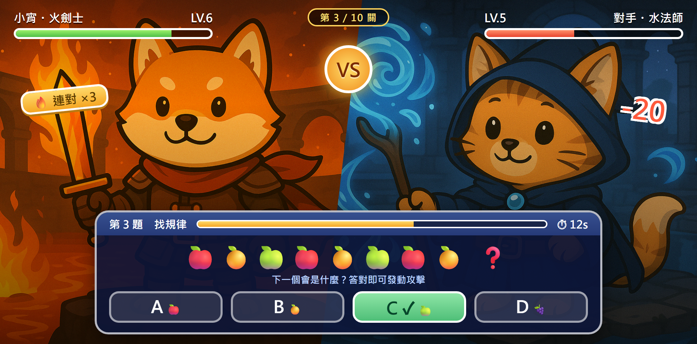
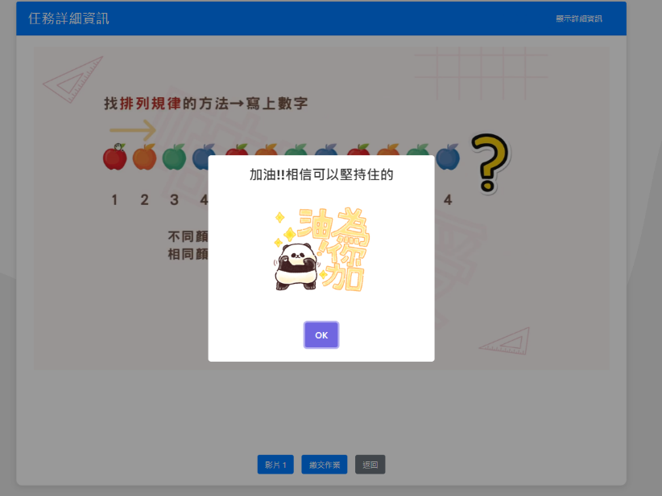
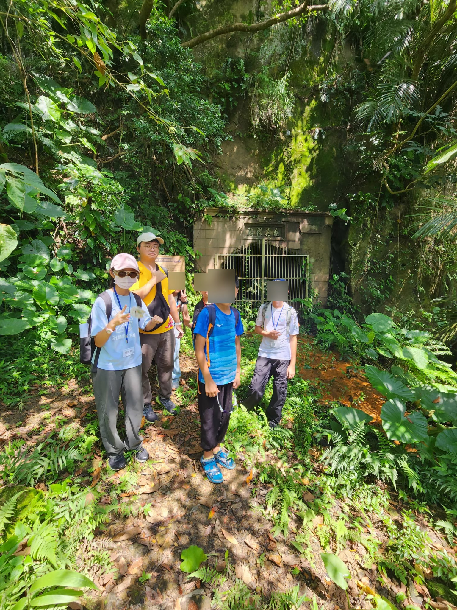
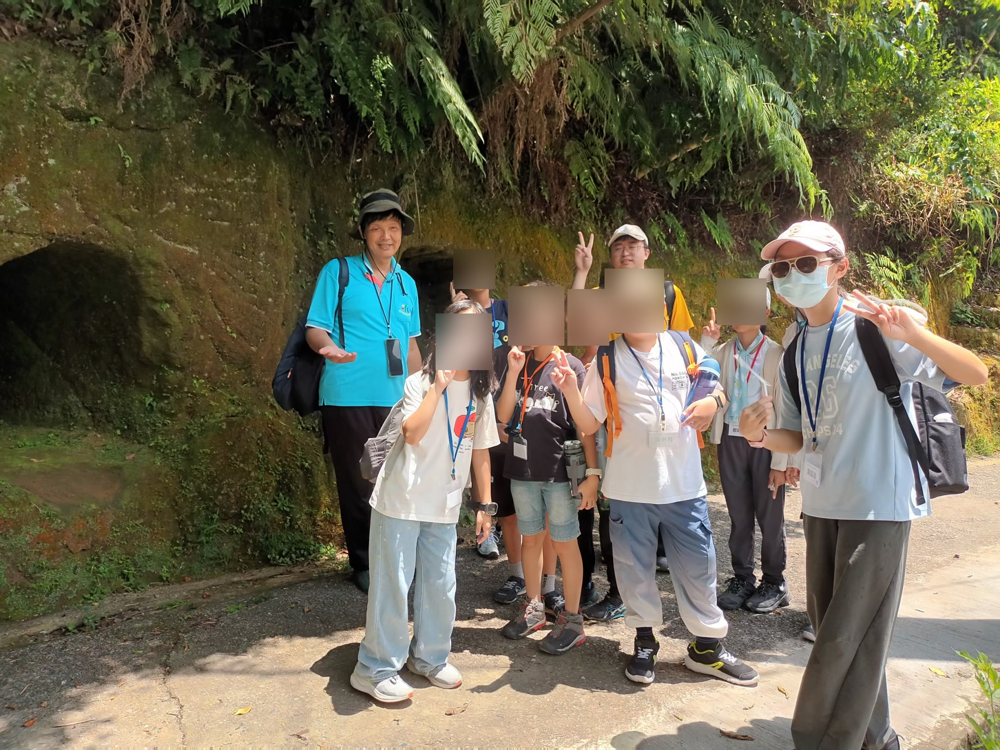
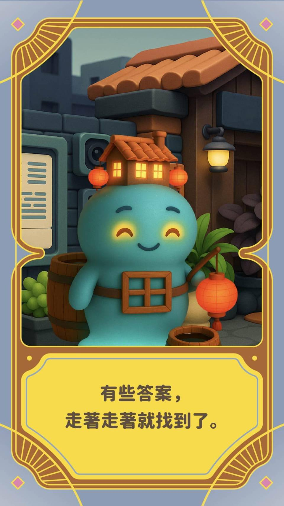
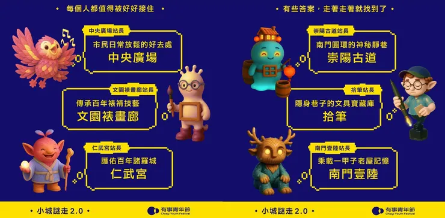
以前：我把 AI 用在網頁開發，是一個獨立的點
上課後：學會完整 Prompt、生圖、影片、UI / UX，還能把 Excel 轉成網頁
重點不是一個作品，而是一路累積、不斷長出新技能的過程
把角色、場景、運鏡、風格交代完整，就能穩定做出想要的效果。
把表格資料轉成可互動、可分享的網頁，資料不再只躺在表格裡。
重點不是學會單一功能，而是知道各個工具怎麼接在一起。
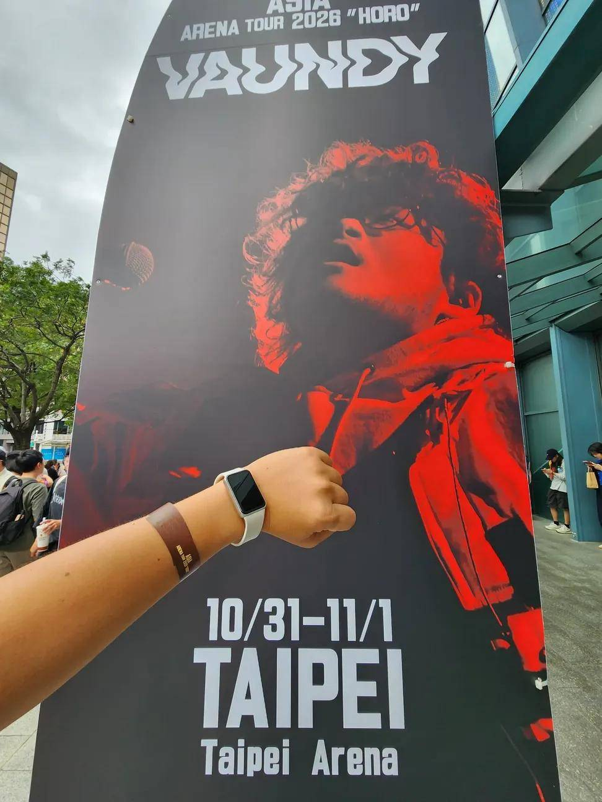
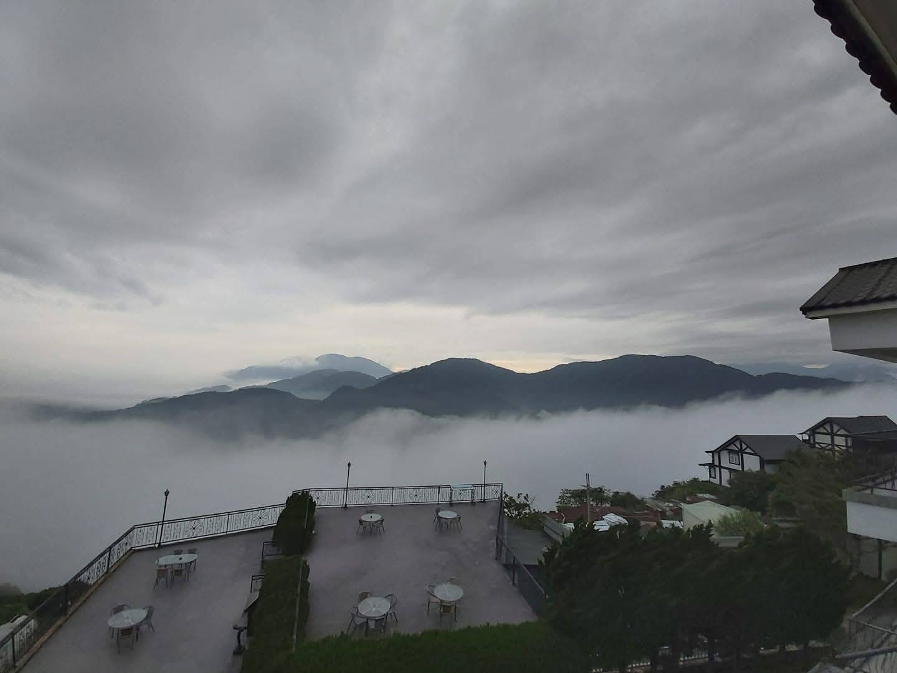
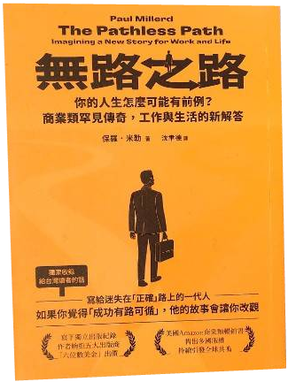
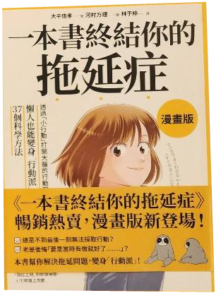
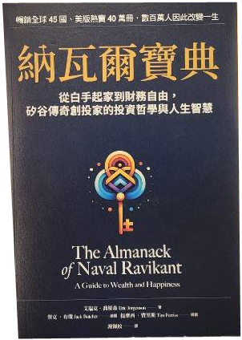